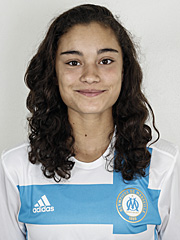

Bienvenue sur Seek'n'Play !
L'equipe du projet
-
Léo VINCENT

Né le 25 mars 1999, Léo habite actuellement à Salon de Provence, et vient tous les matins en bus ! C'est un garçon de nature très timide ! :3 Léo aime beaucoup les jeux vidéos et souhaiterait devenir programmeur gameplay. A part cela, il est photographe équin et pratique l'équitation depuis son plus jeune âge. Il s'agit d'une de ces plus grandes passion ! Et à mon avis, il doit être très fort vu la carrure qu'il donne sur sa photo ;)
-
Né le 11 septembre 2000, Antoine fait parti des plus jeunes de la promo ! Il habite actuellement à Annoeullin ( Comment ? )... Oui en faite, il s'agit d'une ville dans le Nord-Pas-De-Calais x). Puisqu'il habite si loin, il loge dans un appartement étudiant proche de l'IUT. Mise à part cela, c'est un grand fan de Basket-ball ! Vous l'aviez sans doute remarqué sur sa photo ^^. Et oui, il joue même en au haut niveau ! En même temps, avec sa grande taille et toute l'énergie qu'il possède, il a intérêt à tout donner !
Antoine ZOMBRALIS
-
Nicolas ROHRBACH
-

Né le 26 juin 1998... Ah ! lui fait parti des plus âgés de la promo, contrairement à son ami plus haut ! En effet, Antoine et Nicolas s'entendent très bien, tellement bien qu'ils ne restent plus concentrés lorsqu'on est en réunion... Mais grâce à leur énergie, ils nous donnent de très bonnes idées pour la mise en place du porjet :D. Donc Nicolas vit actuellement au Tholonet et vient à l'IUT en vélo tous les matins. En ce moment, il est en période de prise de masse. Il va à la salle faire de la musculation et prend régulièrement des protéines, dont une à 10h où il boit son shaker qui est vraiment hideux d'après lui. J'ai hâte de voir sa transformation d'ici la fin de cette année scolaire !
Théo POUJOL
-

Théo est né le 27 novembre 1999 et est originaire de Marseille ! Il vit actuellement à Carry-le-Rouet. C'est un garçon plutôt calme qui aime le football et jouer à Rainbow 6. Bon même s'il s'agit d'une personne calme, il apprécie tout de même taquiner les autres lorsqu'il avait avec ses amis, n'est-ce pas Théo ? ;p Ce qui m'épate le plus chez Théo, c'est qu'il parle plusieurs langues ! Il parle français bien évidemment, Anglais, l'American English et le Corse ! De plus, il a remporté un défi lors de la nuit de l'info, nommé Mans not hot. Il ne nous le montre pas mais il présente certains talents cachés!
-
Emma TARFI
-

Et puis il y a moi ! Je suis née le 20 janvier 1999 à Aix-en-Provence et je vis actuellement chez mes parents aux Milles. Et je suis la seule fille de l'équipe ! En même temps on est pas beaucoup dans la promo ^^'. J'ai pratiqué du foot pendant 7ans et j'ai terminé ma carrière après 4 années à l'OM cette année, en juin...Mais bon, je devais choisir, le foot ou les études et j'ai choisi les études bien évidemment ! De plus je ne regrette pas du tout ! Moi qui voulait absolument pratiquer les arts martiaux, je me suis inscrite cette année au Yoseikan Budo ! :D C'est un mélange d'arts martials... et ça été une révélation pour moi ! En plus, cela me permet de ne plus regretter d'avoir arrêté le football... Tout ça pour dire que le sport c'est ma vie, et que je ne peux pas m'en passer ! ;)
Presentation du projet tuteure
Notre projet tuteuré consiste, par le biais d'une application mobile et d'un site web, de réaliser des rencontres entre des personnes de tout âge, dans la zone d'Aix-Marseille. Ces rencontres se feront à travers divers activités :
- Sportives ( Vous aviez remarqué que notre équipe était une majorité de sportif et donc nous savons qu'à travers le sport, on peut faire beaucoup de rencontres )
- Culinaires
- Musicales
- Jeux vidéos
- Intellectuels
- Soirées ...
Selon les goûts qui nous seront renseignés lors de l'inscription, nous ferons en sorte que ces personnes ayant ces mêmes goûts, se rencontrent. Par exemple, si deux personnes souhaitent faire du tennis, l'application leur proposera les terrains qui sont disponibles dans la zone. Pour le sport, nous souhaitons faire un partenariat avec Amu Sport pour avoir des terrains et pour que les étudiants souhaitant faire du sport, puissent bénéficier des avantages qu'offre Amu Sport grâce au grand choix de sports qui sont proposés à un tarif très réduit !
Mais nous débatons actuellement sur la destiné de cette application qui viserait un public large ou seulement les étudiants. En effet, pour plus de sécurité, nous préfèrerions que ça soit seulement les étudiants qui l'utilise puisque lors de leur inscption, nous aurons besoin de leur carte étudiante. Cependant, il serait plus sympa qu'elle soit adressé à tout le monde car cette application pourrait servir aux enfants ( parcs, loisirs...), aux célibataires, aux retraités, aux étrangers et visiteurs ( en effet, si des étrangers viennent sur Marseille, cela leur permettra de trouver facilement des activités qui sont disponibles ).
On se pose aussi la question concernant l'argent que nous devrons mettre pour les serveurs, les flyers pour faire
reconnaître notre appli, mais aussi sur plusieurs autres points tels que la mise en place d'un mini jeu vidéo sur l'appli
pour attirer encore plus les personnes à l'utiliser ou encore sur les associations caritatives. En effet, par l'organisation
de soirées ou d'évènements, l'argent récolté serait versé à ses associations...Cependant, cela est aussi sources
de plusieurs autres problèmes : comment organiser ces soirées/évènements qui relèvent beaucoup de responsabilités ? Aura-t-on assez
d'argent pour le verser aux assos sachant que nous en aurions besoin pour les serveurs...
Mise à part cela, notre application permettrait à la fois de faire des rencontres tout en s'amusant ! ;D
Basecamp
Voici le lien qui vous dirige vers notre projet sur Basecamp:
Basecamp : vous verez tous nos travaux concernant le projet :)